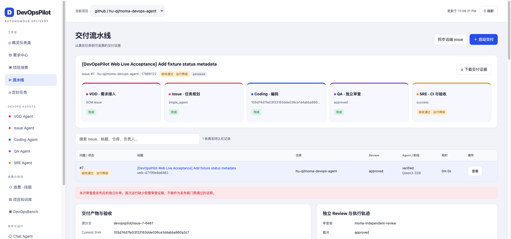
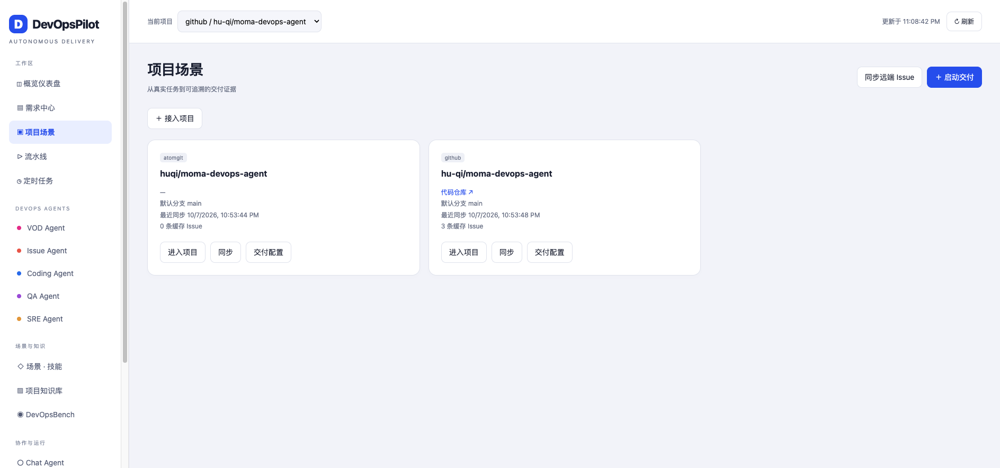
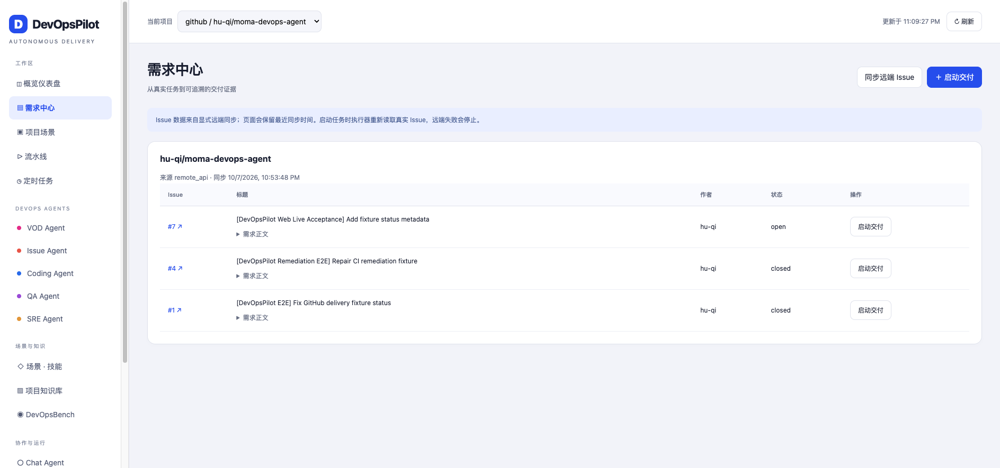
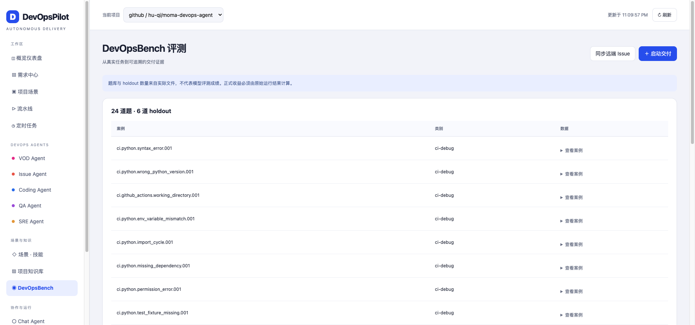
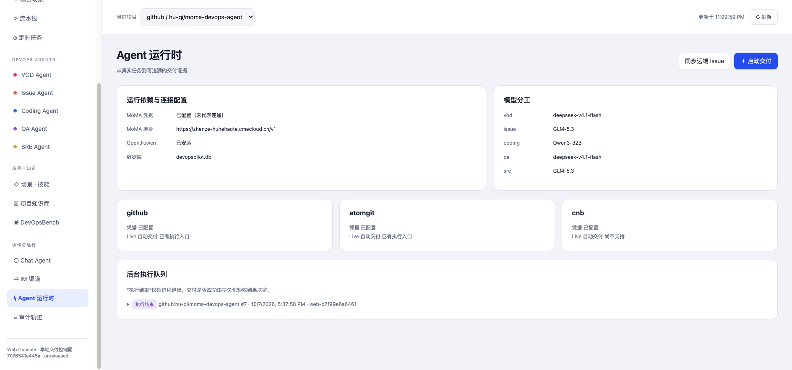
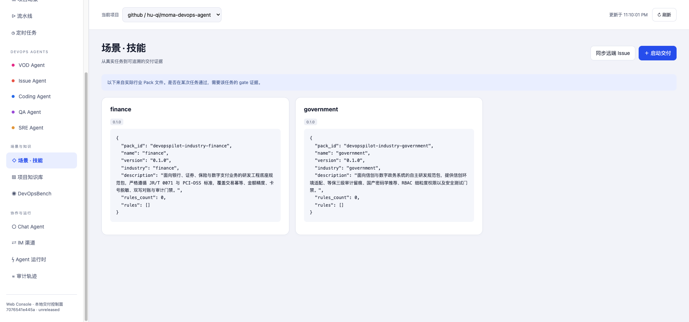

CodeArts · 2026模型应用赛 · 2026-10-07
本页回放已有真实运行与页面截图，不触发新的模型或SCM调用。运行降级、发布后补审和完整Live待重跑边界均保留。






{
"provider": "github",
"repo": "hu-qi/moma-devops-agent",
"issue": "7",
"issue_url": "https://github.com/hu-qi/moma-devops-agent/issues/7",
"kind": "current_code_controlled_live_fixture",
"merged": false,
"delivery_id": "web-d7f99e8a6461",
"commit_sha": "105d74d7fe03f33163dde036ce1d4abba960a3c7",
"pr_url": "https://github.com/hu-qi/moma-devops-agent/pull/8",
"independent_review": {
"verdict": "approved",
"model": "deepseek-v4.1-flash",
"diff_digest": "ceebbaf775d5cdab6fb0946437d962569f35d40bc26c0e92e27ab3ab5cedc26d",
"created_at": "2026-10-07T09:37:11.229018+00:00",
"audit_timing": "post_publication",
"summary": "The change adds a small status_metadata helper and a matching assertion in the fixture test. The independent test run exited 0, and no correctness or security issues were found. The only minor issue is the missing newline at end of app.py."
},
"runtime_degraded": true,
"implementation_sha": "8330415",
"phase": "verified",
"verification": {
"accepted": true,
"summary": "Delivery accepted with runtime degradation: agentteam_timeout. Task succeeded and evidence is complete, but runtime encountered non-fatal degradation.",
"evidence": [
"review:approved",
"diff_digest:ceebbaf775d5cdab6fb0946437d962569f35d40bc26c0e92e27ab3ab5cedc26d",
"ci_run:37601566835",
"commit:105d74d7fe03f33163dde036ce1d4abba960a3c7",
"trajectory:5d7a1d6177c8cd4c68341e835ed70e8b",
"trajectory_disk:5d7a1d6177c8cd4c68341e835ed70e8b.json"
],
"outcome_status": "verified_degraded",
"task_success": true,
"runtime_clean_completion": false,
"evidence_completeness": true,
"degradation_reason": "agentteam_timeout",
"escalation_path": "human_review_recommended:check_runtime_logs_and_timeout_margins"
},
"ci_run_url": "https://github.com/hu-qi/moma-devops-agent/actions/runs/37601566835",
"ci_commit_sha": "105d74d7fe03f33163dde036ce1d4abba960a3c7",
"ci_conclusion": "success",
"prepublication_review_live_retest": false
}